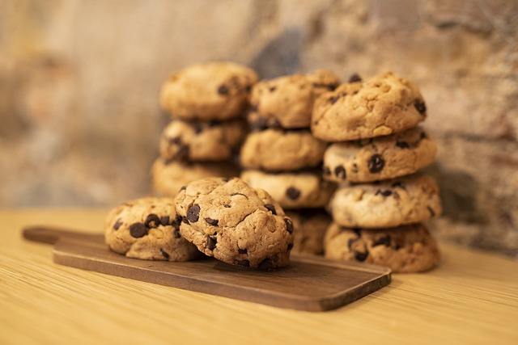

Originality
The word "cookie" comes from the Dutch word "koekje," which means "little cake." Cookies originated in 7th century Persia, one of the first regions to cultivate sugar.
Most Popular Cookie
The chocolate chip cookie is the most popular cookie in America, and it's estimated that over 7 billion of them are eaten each year.
Interesting fact

Accidental Invention: The chocolate chip cookie was created by accident when Ruth Wakefield ran out of baker's chocolate and substituted it with broken pieces of semi-sweet chocolate, expecting them to melt and disperse through the dough.
Instead, the chocolate held its shape, creating the beloved chocolate chip cookie.
Cookies hold a special place in our hearts and kitchens, serving as a sweet symbol of comfort and joy.
They embody a sense of nostalgia, often reminding us of childhood memories spent baking with loved ones or receiving a warm, homemade batch fresh from the oven.
Each bite of a cookie can evoke feelings of happiness and warmth, making them more than just a treat, but a cherished tradition passed down through generations.
Whether enjoyed with a glass of milk, shared with friends and family, or left out for Santa Claus, cookies have an uncanny ability to bring people together and make moments feel magical.